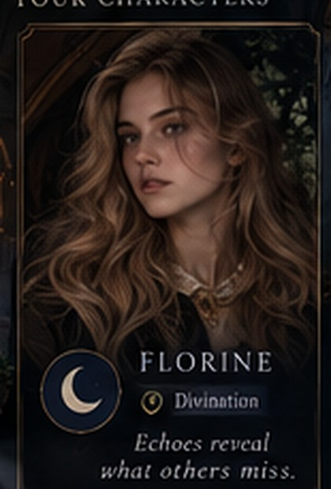
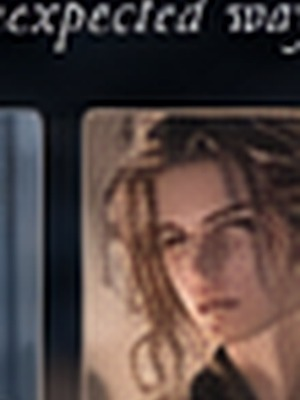
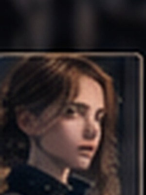
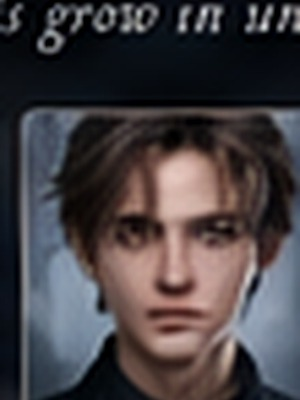

✦ Aetherium
🔎 0
AETHERIUM ACADEMY3 SPELERS± 2 UUR
De Nacht van de Holle Ster
Een interactieve fantasy-whodunnit voor Florine, Margot en Selena. Jullie bepalen zelf wat jullie zeggen, wie jullie vertrouwen en waar jullie zoeken.
Tip: zet de browser fullscreen en activeer “Sfeer” voor subtiele wind, verre klokken en ruimtelijke ambience.
Jullie in Aetherium

Florine - Echo SightZorgzaam, koppig en creatief. Een zilveren konijnencharme helpt haar visioenen verankeren. Koffie is volgens haar geen luxe maar infrastructuur.
DivinationBlueOkido Margot - Mythic Lore
Margot - Mythic LoreNerdy, betrokken en zorgzaam. Draagt kleine maan-, pijl- en wolfsymbolen en kent absurd veel legendes. Een warme chocolademelk telt als strategische voorbereiding.
LoreArtemisFair Selena - Verdant Sense
Selena - Verdant SenseCreatief, koppig en eerlijk. Haar jackalope-familiar reageert op plantenmagie. Dennen, kaneel en een licht chaotische cottagecore-vibe volgen haar vanzelf.
HerbologyJackalopeHoe dan ook...


Onderzoek de klas
Iedereen heeft iets te verbergen. Jullie mogen drie personen uitgebreid spreken. Kies zelf wie en waarover jullie doorvragen.
Gesproken: 0/3. Een leugen betekent niet automatisch moord.

Brutaal, charmant, en aantoonbaar niet altijd waarheidsgetrouw.
Heeft toegang tot plekken waar gewone studenten niet horen te komen.

Haar officiële logboek klopt niet helemaal.

Had toegang tot materiaal dat vanavond opduikt.
Beheert toegang, wards en disciplinaire registraties.
Heeft al één verklaring moeten corrigeren.